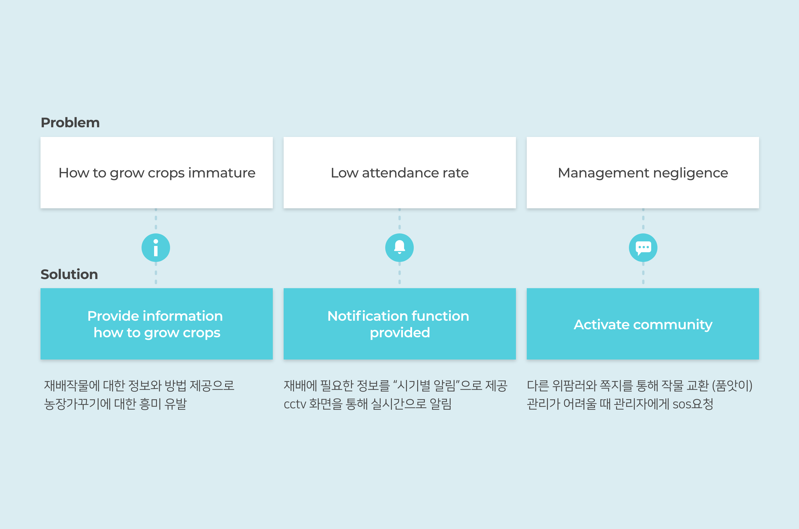
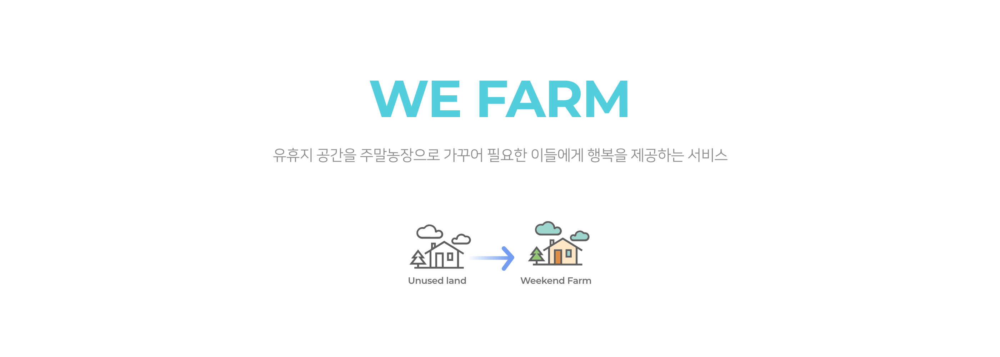
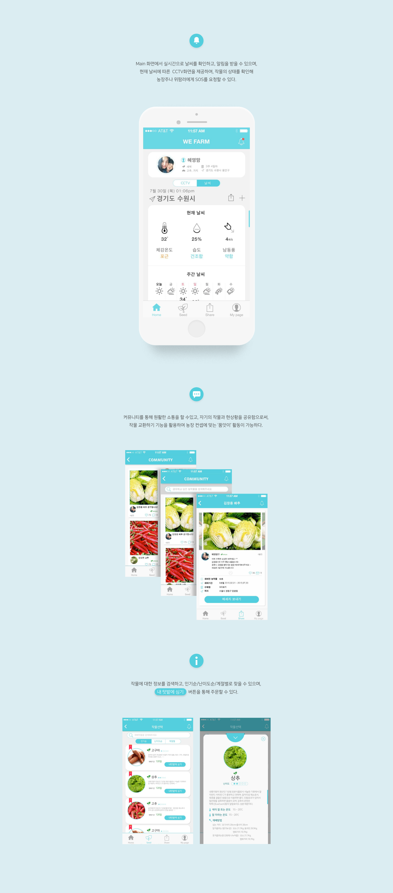

WEFARM
주말농장 활성화 프로젝트
Proposal
삭막한 도시 생활에 지친 도시인들에게 부족한 소통방식을 새롭게 제안합니다.
주말농장에서 가족과 함께 시간을 보내고
위팜러들과 함께 서로 소통하고 공유함으로써, 즐거운 주말생활이 가능합니다.
Design issue
실제 주말농장이 어떻게 운영되고 있는지, 사용자들의 실제 생각이 궁금했습니다.
직접 수원 주말농장에 찾아가 인터뷰를 진행하고, 운영과정을 확인하면서
문제점을 파악한 뒤, 기획에 힘을 실었습니다.


